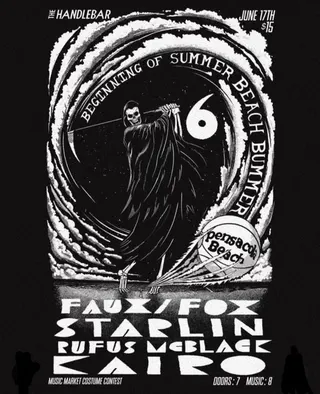
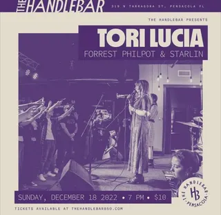
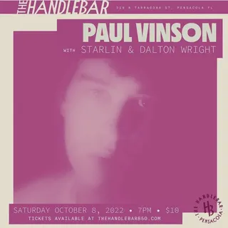
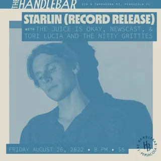
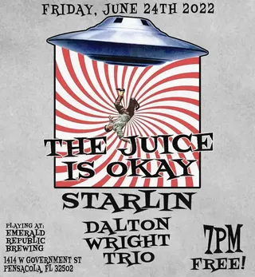
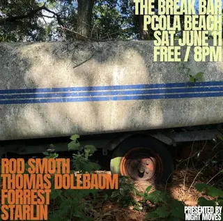
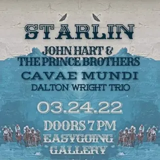

Starlin
pcola local10 shows on the diypensacola record since 2022
on the record since March 2022, first seen at the islander on a bill with feed lemon and 12eleven. last seen November 2023 at the handlebar; the record's been quiet since.
- first playedMar 11, 2022 · the islander
- most played atthe handlebar ×5 shows
- busiest year2022 · 8 shows
- biggest lineup4 acts · Jun 2023
- most shared bills withdalton wright ×3 bills shared
flyer wall
Nov 3, 2023 · the handlebar Apr 23, 2022 · easy going gallery
Apr 23, 2022 · easy going gallery Mar 11, 2022 · the islander
Mar 11, 2022 · the islander

Jun 17, 2023 · the handlebar
Dec 18, 2022 · the handlebar
Oct 8, 2022 · the handlebar
Aug 26, 2022 · the handlebar
Jun 24, 2022 · emerald republic brewing
Jun 11, 2022 · the break Apr 23, 2022 · easy going gallery
Apr 23, 2022 · easy going gallery
Mar 24, 2022 · easy going gallery Mar 11, 2022 · the islander
Mar 11, 2022 · the islanderpast shows
- 2023
- 3Nov 2023Built To Spill, Heavy Kid, Starlinthe handlebar
- 17Jun 2023Faux / Fox, Starlin, Rufus Mcblack, Kairothe handlebar
- 2022
- 18Dec 2022Tori Lucia, Forrest Philpot, Starlinthe handlebar
- 8Oct 2022Paul Vinson, Starlin, Dalton Wrightthe handlebar
- 26Aug 2022Starlin, The Juice Is Okay, Newscast, Tori Luciathe handlebar
- 24Jun 2022The Juice Is Okay, Starlin, Dalton Wrightemerald republic brewing
- 11Jun 2022Rod Smoth, Thomas Dolebaum, Forrest, Starlinthe break
- 23Apr 2022Wonder Kid, Starlin, Feed Lemon, Kairoeasy going gallery
- 24Mar 2022Starlin, John Hart, Cavae Mundi, Dalton Wrighteasy going gallery
- 11Mar 2022Feed Lemon, 12eleven, Starlin, Morning Tripsthe islander
shared bills with
dalton wright ×3feed lemon ×2kairo ×2the juice is okay ×2tori lucia ×212elevenbuilt to spillcavae mundifaux / foxforrestforrest philpotheavy kid
act pages are built automatically from the show archive, so something may be off: a misspelled name, a missing link, the wrong type, or a bad local/touring call. no disrespect meant. wrong on any of that, or want a listen link (youtube or bandcamp) or live footage added? send it in.